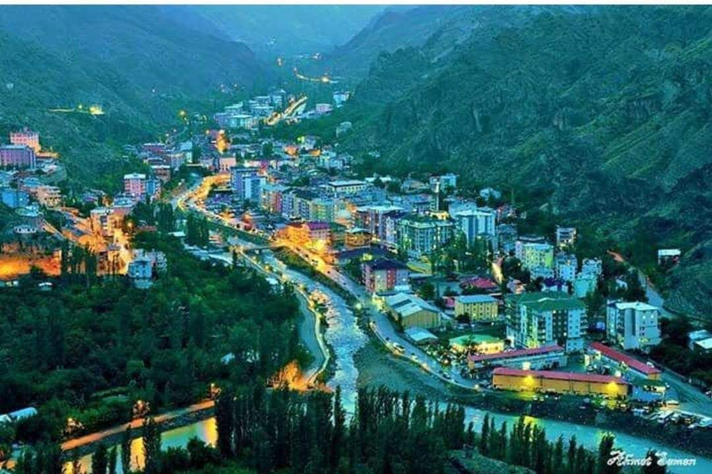

Yusufeli Eski İlçe
Some representative placeholder content for the first slide.

İşhan Kilisesi
Some representative placeholder content for the second slide.

Yusufeli Barajı
Some representative placeholder content for the third slide.

Yusufeli Yeni İlçe
Some representative placeholder content for the second slide.